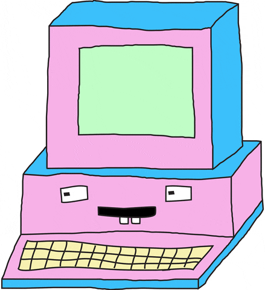

|  | ||
| Home | Vendas | Contato | ||
A melhor Loja do segmentoTodo site tem (ou deveria ter) a famosa página “Sobre Nós”, também conhecida por “Quem somos”. Nela, é comum ver uma breve apresentação sobre o que a empresa faz, além da famosa tríade “Nossa Missão, Visão e Valores”. Já dizia Neil Patel, um dos papas do marketing digital: “Toda página ‘Sobre’ de sucesso é centrada na história do autor”. E é nesse ponto que podemos tirar o melhor proveito do storytelling. É provado que o storytelling impulsiona conversões. Quer um exemplo nada técnico e bem simples de entender? A dica parece óbvia demais, não é? Você já deve estar cansado de ler ou ouvir: “Use sua história para encantar possíveis clientes”. Ok. A questão é que você não quer qualquer cliente, você quer o cliente certo. Aquele que, por algum motivo de “força maior”, irá preferir você, mesmo que o concorrente faça promoções. Se todos nós temos uma história, por que não aproveitá-la? A página “Sobre” é o espaço perfeito para contar a sua história e a da sua empresa. Sem exageros, é claro: fale de você, sim, mas fale pensando em quem vai ler. A admiração por uma marca ou empresa começa muito antes do contato. As pessoas buscam por identificação, por inspiração, então tenha certeza de que você está transmitindo paixão por aquilo que faz: isso desperta e te conecta com quem precisa de você e do que você faz. Nesse ponto, a Manifesto 55 encontrou a sua missão: facilitar processos de aprendizagem, ajudando equipes dentro de empresas a libertarem sua criatividade, formando líderes com visões inovadoras e mais bem preparados para o cenário complexo em que vivemos. Para diminuir as chances de fracassar, é importante observar exemplos de negócios que começaram pequenos e hoje conquistaram o sucesso. Confira agora quatro casos de empresas que deram certo para se inspirar e fazer sua ideia se tornar um sucesso. Um empresário paulistano percebeu o crescimento da plataforma e decidiu usar as fotos publicadas ali em seu favor. A Instastore é uma loja virtual que oferece presentes personalizados com imagens retiradas diretamente da rede social. A ideia é eternizar os momentos que antes estavam fadados a se perderem em meio ao turbilhão de informações que circula pela internet. |
||
|